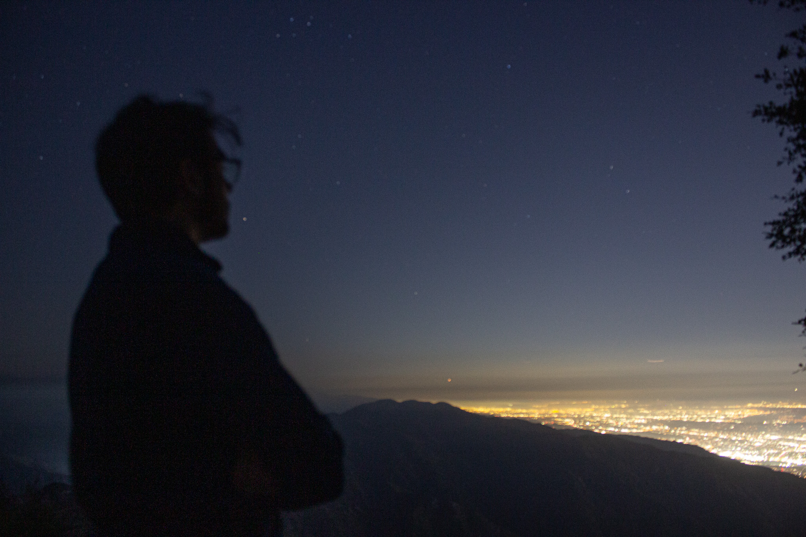

Education
Doctor of Philosophy at the University of Sydney
Sydney Institute for Astronomy, School of Physics (2023 – present)
- Supervisors: A/Prof Benjamin Pope & Prof Peter Tuthill
- Research area: Astrophysical image reconstruction and optical simulation with differentiable forward models
Bachelor of Science (Honours) at the University of Sydney
Sydney Institute for Astronomy, School of Physics (2022)
- Major in Physics
- Honours First Class, final mark of 88.0
- 50% research, 50% coursework components
- Research Supervisors: Prof Peter Tuthill & Dr Barnaby Norris
- Research Area: Interferometric imaging of evolved red giant stars
Bachelor of Science at the University of Wollongong
School of Physics, EIS Faculty (2019 – 2021)
- Major in Physics
- Graduated with Distinction
Employment
Python Helper at the University of Sydney Business School
Sydney, Australia (2023 – present)
- Teaching Python data analytics techniques to Masters level students
- Exam marking
Physics Tutor at the School of Physics, University of Sydney
Sydney, Australia (2023 – present)
- Lab demonstration
- Assignment writing and marking
- Telescope operation and running night viewing sessions
- Running tutorials
- Exam marking and supervision
Songwriter for Undergraduate Physics Labs at the School of Physics, University of Wollongong
Wollongong, Australia (2020 – 2023)
- Writing music with Duncan Fisher (lab coordinator) for first- and second-year physics lab demonstration videos to help students engage with the content
Mathematics & Physics Tutor · Self Employed
NSW, Australia (2018 – 2023)
- Offered in-person and online private tutoring
- Up to HSC-level Physics and Ext. 1 Mathematics
Mathematics Tutor at NumberWorks'nWords
Wollongong, Australia (2019 – 2020)
- Tutored mathematics from years K–12
- Gained professional experience in a small office workplace
- Gained experience in tutoring and working with children
Publications
- Max Charles et. al. Image Reconstruction with the JWST Interferometer. Publications of the Astronomical Society of Australia, 2026
- Max Charles et. al. Mitigating effects of telescope jitter through differentiable forward-modeling. Journal of Astronomical Telescopes, Instruments, and Systems, 2026
- Max Charles as part of Desdoigts et al. AMIGO: a Data-Driven Calibration of the JWST Interferometer. Publications of the Astronomical Society of Australia, 2026
- Max Charles as part of Tuthill et al. The TOLIMAN mission: A low-cost space telescope for high precision narrow-angle astrometry. Journal of Astronomical Telescopes, Instruments, and Systems, 2026
Conference Talk Awards
- Best Student Talk: End-to-end Forward Modelling with AMIGO, Australian Exoplanet Workshop (Nov 2025)
- Best Student Research Talk: AMIGO & the JWST Interferometer, ASA Annual Scientific Meeting (Jul 2025)
- Best Talk: The Reign of Viridis, Mount Stromlo Student Seminar (Nov 2023)
Volunteering
SSO Open Day at Siding Springs Observatory
Coonabarabran, Australia (2023, 2026)
- Gave public tours of the ANU 2.3 m Telescope
- Fielded public questions about general astronomy
Learning Labs at the University of Wollongong
Wollongong, Australia (2019 – 2020)
- Learning Labs is an academic and creative arts enrichment program for high-achieving students from Year 1 to Year 10
- Assisted with the logistics of the programs and the lesson delivery
Treasurer at the University of Wollongong Physics Society
Wollongong, Australia (2020 – 2022)
- Oversaw finances of the society
- General assistance to the organisation and the running of society events
Other Courses
Sound Recording in the Home Studio at Sydney Conservatorium of Music
Conservatorium Open Academy (2026)
- Developed practical skills in sound recording and production
Skills
Python, JAX, Linux, Matplotlib, Tutoring, Data Analysis, Data Visualisation, Working with Children, Logic Pro X, Telescope Operation, Songwriting, Music Production
